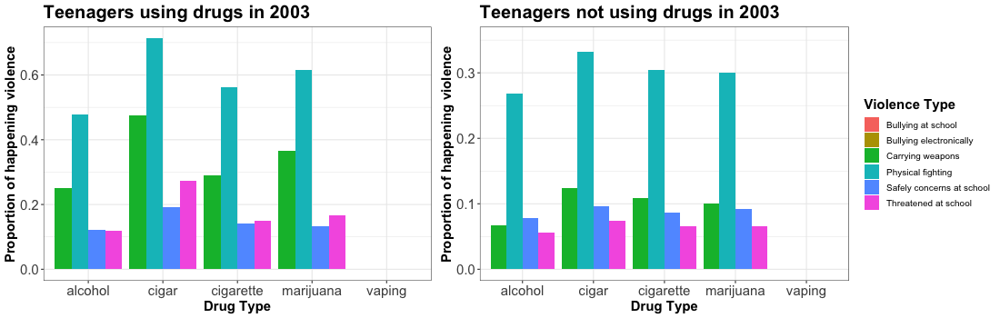

Motivation
Facts about vaping
2,051 reported lung illness cases and 39 lung illness deaths due to vaping.
81% Americans report teenagers who would not smoke cigarettes are using flavored e-cigarettes
Most popular e-cigarette product introduces with a 5% nicotine up to 2.7 times delievering nicotine than others
According to reports in recent years, we can see an underlying trend of vaping is increasing, especially in the teenager group.
Data introduction
In order to use the data conveniently, we clean and tidy the data at the beginning, and yield file containing the data.
- sex: male, female, other(i.e.transgender)
- borough: five boroughs in the New York City
- sad_hopeless: feeling so sad or hopeless almost every day for two weeks or more
- attempted_suicide: ever attempted to do suicide
- injurious_suicide_attempt: attempted suicides result in an injury, poisoning, or overdose that had to be treated by a doctor or nurse
- current_cigarette_use: smoked cigarettes during the past 30 days
- current_vaping: used an electronic vapor product during the past 30 days
- current_cigar_use: smoked cigars, cigarillos, or little cigars during the past 30 days
- current_alcohol_use: had at least one drink of alcohol
- current_marijuana_use: used marijuana during the past 30 days
- safety_concerns_at_school: not went to school due to feeling unsafe at school or on your way to or from school during the past 30 days
- threatened_at_school: been threatened or injured you with a weapon such as a gun, knife, or club on school property during the past 12 months
- physical_fighting: been in a physical fight during the past 12 months
- bullying_at_school: been bullied on school property during the past 12 months
- bullying_electronically: been bullied electronically (i.e. facebook) during the past 12 months
- texting_and_driving: drived a car or other vehicle when being drinking alcohol during the past 30 days
- drinking_and_driving: texted or e-mailed while driving a car or other vehicle during the past 30 days
- carring_weapon: carried a weapon such as a gun, knife, or club during the past 30 days
Questions
According to the existing defined drugs, such as traditional tobacco use, alcohol, and the recent reported facts about vaping, we want to find answers to the following questions:
- Whether the distribution of vaping has been similar with other drugs? What will the trend look like?
- Whether the mental health reported in company with the vaping has an association? What does the association look like?
- What are drugs decomposed by demographics and year?
- Can the vaping be decomposed by experienced violenced and other risky behaviors?
Explorary Analysis
We will give the analysis and visualization accorded with the questions
### load the cleaned data
load("./data/nyc_data.RData")
nyc_drug <- df_total
#### A better way to do it by avoiding uneeded format transformation_byHSDistribution of vaping and existing drug use over time by borough
We plot an animated graph to show the distribution of vaping and defined drug use. each drug will exist in an order corresponding to the legend.
## filter the data used in this part
nyc_drug_used <- nyc_drug %>%
select(id, borough, year,
cigarette = current_cigarette_use, cigar = current_cigar_use,
alcohol = current_alcohol_use, marijuana = current_marijuana_use,
vaping = current_vaping) %>%
mutate(year = factor(year))
## cigarette proportion
cigarette <- nyc_drug_used %>%
filter(!is.na(cigarette)) %>%
group_by(year, borough) %>%
summarize(n = n(),
cigarette = sum(cigarette == "Yes")/n) %>%
select(-n)
## cigar proportion
cigar <- nyc_drug_used %>%
filter(!is.na(cigar)) %>%
group_by(year, borough) %>%
summarize(n = n(),
cigar = sum(cigar == "Yes")/n) %>%
select(-n)
## alcohol proportion
alcohol <- nyc_drug_used %>%
filter(!is.na(alcohol)) %>%
group_by(year, borough) %>%
summarize(n = n(),
alcohol = sum(alcohol == "Yes")/n) %>%
select(-n)
## vaping proportion
vaping <- nyc_drug_used %>%
filter(!is.na(vaping)) %>%
group_by(year, borough) %>%
summarize(n = n(),
vaping = sum(vaping == "Yes")/n) %>%
select(-n)
## marijuana proportion with all other proportions
marijuana_full <- nyc_drug_used %>%
filter(!is.na(marijuana)) %>%
group_by(year, borough) %>%
summarize(n = n(),
marijuana = sum(marijuana == "Yes")/n) %>%
select(-n) %>%
left_join(cigarette, by = c("year", "borough")) %>%
left_join(cigar, by = c("year", "borough")) %>%
left_join(alcohol, by = c("year", "borough")) %>%
left_join(vaping, by = c("year", "borough")) %>%
pivot_longer(marijuana:vaping,
names_to = "drug_type",
values_to = "proportion")
drug_p <- marijuana_full %>%
filter(!(is.na(proportion)))%>%
ggplot(aes(x = year, y = proportion, color = borough, shape = drug_type,
group = interaction(borough, drug_type), frame = drug_type)) +
geom_point(size = 2.2) + geom_path(size = .8) +
labs(title = "{closest_state}",
x = "Year",
y = "Proportion of drug use",
color = "Borough",
shape = "Drug type") +
theme(plot.title = element_text(size = 30, face = "bold"),
axis.text=element_text(size = 15),
axis.title=element_text(size = 15,face = "bold")) +
theme(legend.text=element_text(size = 10), legend.title=element_text(size = 15, face = "bold")) +
transition_states(drug_type, transition_length = 1, state_length = 3, wrap = TRUE) +
enter_fade() + exit_fade()
animate(drug_p)
Distribution of mental health over time by borough
We plot an animated graph to show the distribution of some mental disorders which are related to the vaping according to the recent reports. each kind of disorder will exist in an order corresponding to the legend.
## data for mental health disorder
nyc_drug_health <- nyc_drug %>%
select(id, year, borough, sad = sad_hopeless,
suicide = attempted_suicide, injury = injurious_suicide_attempt) %>%
mutate(year = factor(year))
## sadless
sad <- nyc_drug_health %>%
filter(!is.na(sad)) %>%
group_by(year, borough) %>%
summarize(n = n(),
sad = sum(sad == "Yes")/n) %>%
select(-n)
## attempted suicide
suicide <- nyc_drug_health %>%
filter(!is.na(suicide)) %>%
group_by(year, borough) %>%
summarize(n = n(),
suicide = sum(suicide == "Yes")/n) %>%
select(-n)
## injurious attempted suicide
injury_full <- nyc_drug_health %>%
filter(!is.na(injury)) %>%
group_by(year, borough) %>%
summarize(n = n(),
injury = sum(injury == "Yes")/n) %>%
select(-n) %>%
left_join(sad, by = c("year", "borough")) %>%
left_join(suicide, by = c("year", "borough")) %>%
pivot_longer(injury:suicide,
names_to = "mental_disorder",
values_to = "proportion")
## animated plot
mental_p <- injury_full %>%
filter(!(is.na(proportion))) %>%
ggplot(aes(x = year, y = proportion, color = borough, shape = mental_disorder,
group = interaction(borough, mental_disorder))) +
geom_point(size = 2.2) + geom_path(size = .8) +
labs(x = "Year",
y = "Proportion of mental disorder",
color = "Borough",
shape = "Mental disorder") +
scale_shape_discrete(labels = c("injurious attempted suicide", "sad and hopeless", "attempted suicide")) +
theme(axis.text = element_text(size = 15),
axis.title = element_text(size = 15,face = "bold")) +
theme(legend.text = element_text(size = 10), legend.title = element_text(size = 15, face = "bold")) +
transition_states(mental_disorder, transition_length = 1, state_length = 3, wrap = TRUE) +
enter_fade() + exit_fade()
animate(mental_p)
Drugs(vaping) decomposed by experienced violenced and other risky behaviors
We are interested in whether the violence and risky behaviors have difference decomposed by the drug use.
## drugs with violence
nyc_drug_violence <- nyc_drug %>%
select(id, borough, year,
cigarette = current_cigarette_use, cigar = current_cigar_use,
alcohol = current_alcohol_use, marijuana = current_marijuana_use,
vaping = current_vaping, safety_concerns_at_school, threatened_at_school,
physical_fighting, bullying_at_school, bullying_electronically,
texting_and_driving, drinking_and_driving, carring_weapon) %>%
mutate(year = factor(year))
## cigaretteYes
cigarette_yes <- nyc_drug_violence %>%
filter(cigarette == "Yes") %>%
gather(key = "violence", value = "reply", safety_concerns_at_school,
threatened_at_school, physical_fighting, bullying_at_school,
bullying_electronically, texting_and_driving, drinking_and_driving,
carring_weapon, na.rm = TRUE) %>%
group_by(year, violence) %>%
summarize(n = n(),
cigarette = sum(reply == "Yes")/n) %>%
select(-n)
## cigarYes
cigar_yes <- nyc_drug_violence %>%
filter(cigar == "Yes") %>%
gather(key = "violence", value = "reply", safety_concerns_at_school,
threatened_at_school, physical_fighting, bullying_at_school,
bullying_electronically, texting_and_driving, drinking_and_driving,
carring_weapon, na.rm = TRUE) %>%
group_by(year, violence) %>%
summarize(n = n(),
cigar = sum(reply == "Yes")/n) %>%
select(-n)
## alcoholYes
alcohol_yes <- nyc_drug_violence %>%
filter(alcohol == "Yes") %>%
gather(key = "violence", value = "reply", safety_concerns_at_school,
threatened_at_school, physical_fighting, bullying_at_school,
bullying_electronically, texting_and_driving, drinking_and_driving,
carring_weapon, na.rm = TRUE) %>%
group_by(year, violence) %>%
summarize(n = n(),
alcohol = sum(reply == "Yes")/n) %>%
select(-n)
## vapingYes
vaping_yes <- nyc_drug_violence %>%
filter(vaping == "Yes") %>%
gather(key = "violence", value = "reply", safety_concerns_at_school,
threatened_at_school, physical_fighting, bullying_at_school,
bullying_electronically, texting_and_driving, drinking_and_driving,
carring_weapon, na.rm = TRUE) %>%
group_by(year, violence) %>%
summarize(n = n(),
vaping = sum(reply == "Yes")/n) %>%
select(-n)
## marijuanaYes with all other drugs
marijuana_yes_full <- nyc_drug_violence %>%
filter(marijuana == "Yes") %>%
gather(key = "violence", value = "reply", safety_concerns_at_school,
threatened_at_school, physical_fighting, bullying_at_school,
bullying_electronically, texting_and_driving, drinking_and_driving,
carring_weapon, na.rm = TRUE) %>%
group_by(year, violence) %>%
summarize(n = n(),
marijuana = sum(reply == "Yes")/n) %>%
select(-n) %>%
left_join(cigarette_yes, by = c("year", "violence")) %>%
left_join(cigar_yes, by = c("year", "violence")) %>%
left_join(alcohol_yes, by = c("year", "violence")) %>%
left_join(vaping_yes, by = c("year", "violence")) %>%
gather(key = "drug", value = "proportion",
marijuana, cigarette, cigar, alcohol, vaping)
## animated plot
violence_p <- marijuana_yes_full %>%
ggplot(aes(x = drug, y = proportion, fill = violence, group = violence)) +
geom_bar(stat = "identity", position = "dodge") +
labs(title = "Bar plot of teenagers using the drug in {closest_state}",
x = "Drug Type",
y = "Proportion of happening violence",
fill = "Violence Type") +
scale_fill_discrete(labels = c("Bullying at school", "Bullying electronically",
"Carrying weapons", "Drinking and driving",
"Physical fighting", "Safely concerns at school",
"Texting and driving", "Threatened at school")) +
theme(axis.text = element_text(size = 15),
axis.title = element_text(size = 15,face = "bold")) +
theme(legend.text = element_text(size = 10), legend.title = element_text(size = 15, face = "bold")) +
transition_states(year, transition_length = 2, state_length = 3) +
enter_fade() + exit_shrink()
animate(violence_p, fps = 2)